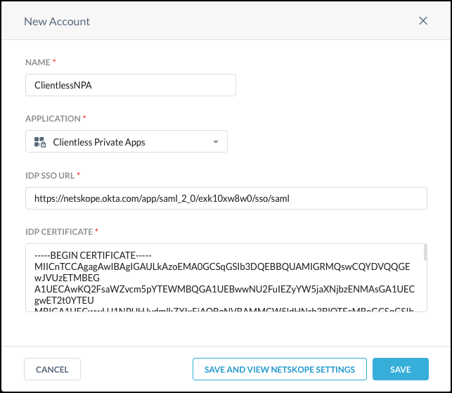
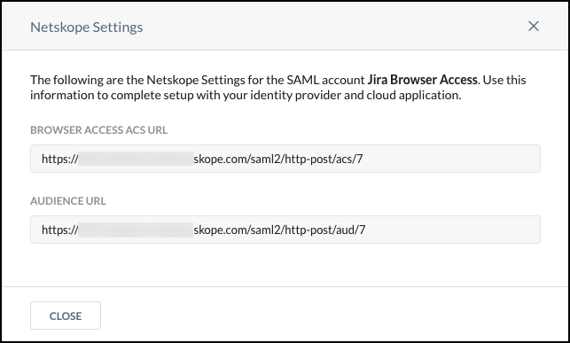
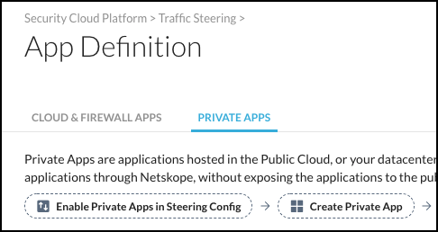
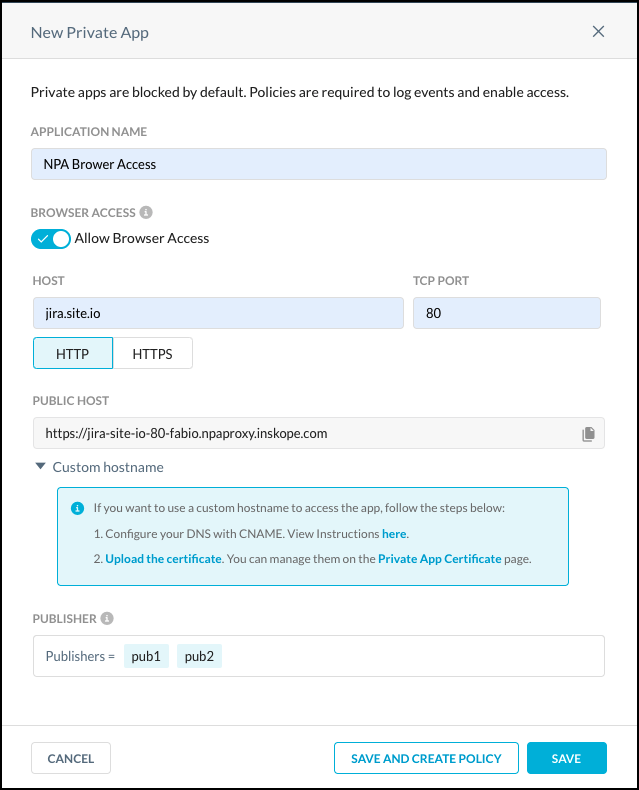
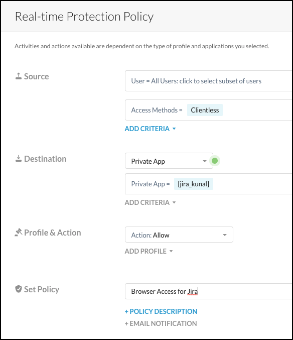

Configure Browser Access for Private Apps
Netskope enables two methods for accessing your Private Apps. For advanced use cases the Netskope Client provides full support for TCP and UDP based applications. To quickly access HTTP or HTTPS based applications, Netskope Private Access Browser Access may be a better option.
Prerequisites
You must have an active Identity Provider (IdP) account and have privileges to modify settings in your IdP account that will direct traffic to Netskope.
Workflow
Create a SAML Reverse Proxy account in the Netskope UI and and then update your IdP account with the Netskope ACS URL and Audience URL.
Enable Browser Access for a Private App.
Create a Real-time Protection policy to grant users browser access to Private Apps.
Create a SAML Account for Browser Access
You will need your IdP SSO URL and certificate to complete these steps.
Log in to Netskope UI.
Go to Settings > Security Cloud Platform and click SAML (under Reverse Proxy).
Click Add Account.

In the New Account window, enter a name for the account.
 Select Clientless Private Apps from the Application dropdown list.
In the Setup tab, select and enter these parameters:
IdP SSO URL: Enter your IdP SSO URL.
IdP Certificate: Enter your IdP certificate.
Click Save and View Network Settings to see the URLs for this account. Copy the Clientless ACS URL and Audience URL to use in your IdP account. Update your IdP account before proceeding.

Enable a Private App for Browser Access
These instructions are for new and existing Private Apps.
Go to Settings > Security Cloud Platform > App Definition and click Private Apps.
 Click New Private App to create a new private app, or select an existing app (and jump to step 4).
 Enter a meaningful app name in the Application Name field (like
Clientless jira app).Enable Allow Clientless Access.
Enter the Host domain or IP address in the Host field (like
jira.site.io). The Host field supports the following syntax: Host (jira.site.io), IP (10.1.2.3). Up to 32 hosts can be added. Next add a TCP port number.After adding the hostname and port, the Public Host URL is displayed. This is the URL by which properly authenticated users can access the private app. You can copy the public host name by clicking the copy icon .
Select HTTP or HTTPS. For HTTPS, the private app must either use a certificate that is signed by a trusted certificate authority, or you must select the Trusted self-signed certificate option.
Note
Instructions for adding a custom hostname will be available after the 88.1 release gets deployed later in August on the Knowledge Portal.
Click in the Publisher text field and select one or more Publishers from the dropdown list.
Tip
For high-availability, add multiple publishers for each private app. Up to 16 Publishers can be used per app.
Click Save.
Connecting the private app to the publisher may take several minutes. Make sure that you see the green icon  for this private app before proceeding. If the badge is red, use the Troubleshooter feature or check your firewall rules before proceeding.
for this private app before proceeding. If the badge is red, use the Troubleshooter feature or check your firewall rules before proceeding.
Create a Real-time Protection Policy for Browser Access to Private Apps
You need to create a Real-time Protection policy in order to allow Browser Access to Private Apps.
Go to Policies > Real-time Protection.
Click New policy and select Private App Access.
For Source, select the Users, OU, or Groups for which you want to grant access to the private app(s).
For Access Method, select Clientless.
For Destination, leave Private App and select a private app from the dropdown list (like
Clientless jira).For Action, select Allow to grant access. To deny access, select Block.
Give the policy a name (like
Allow Clientless Users to access JIRA), and then choose the notification template to use in the policy. When finished, click Save. Click Apply Changes.